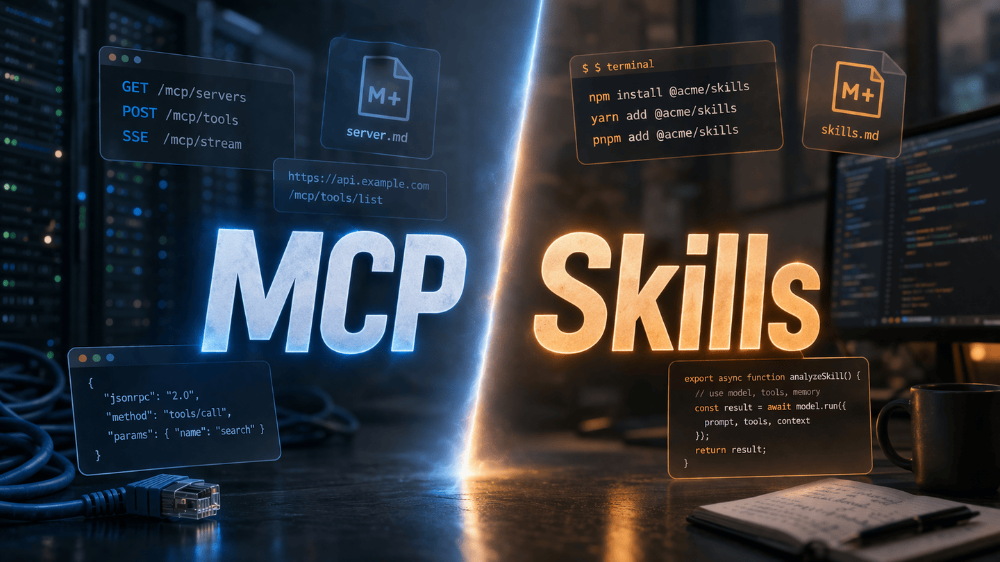
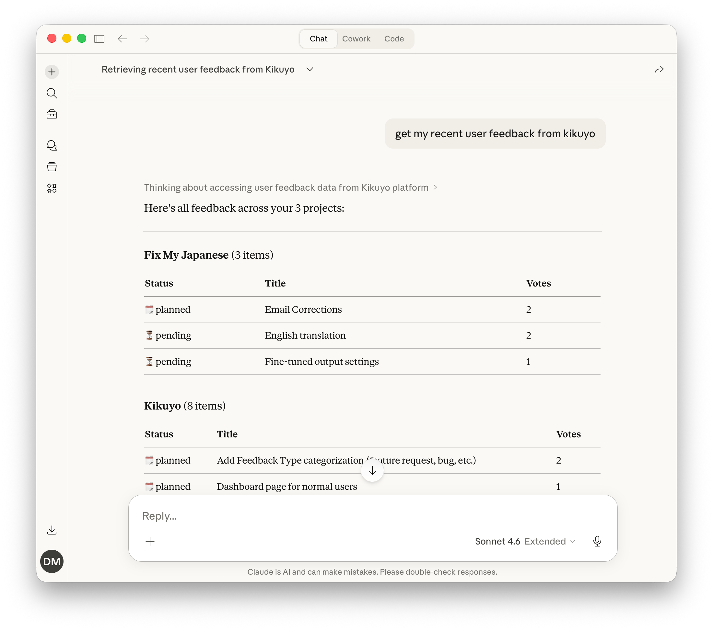
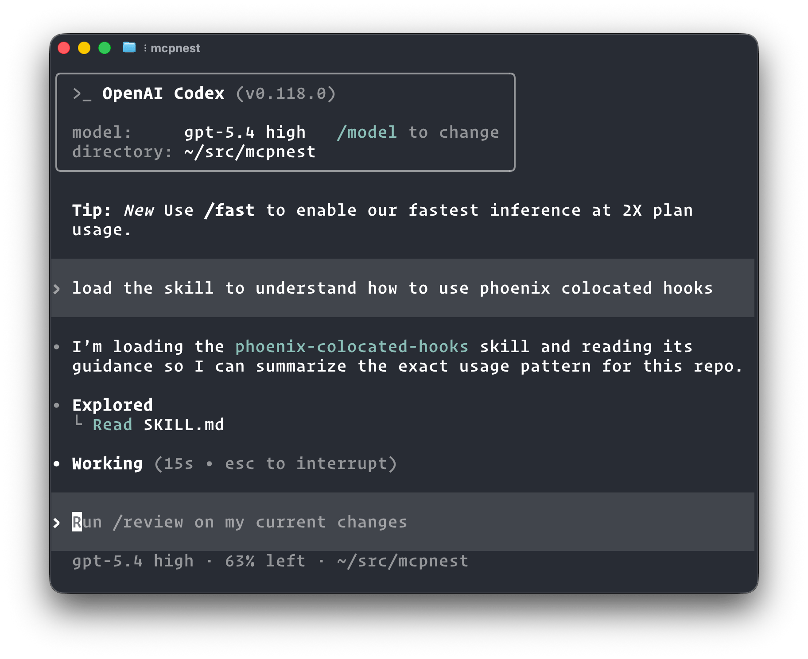
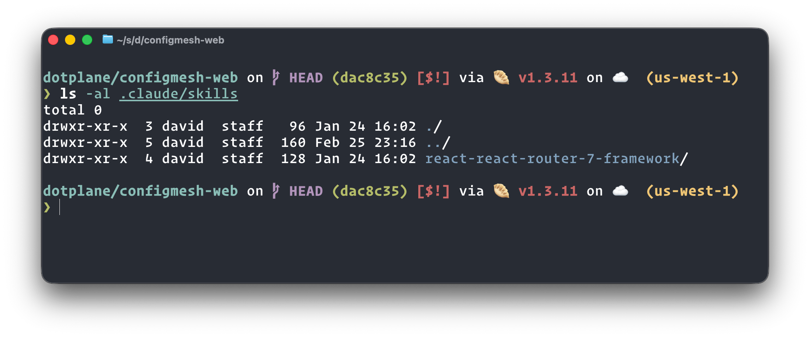
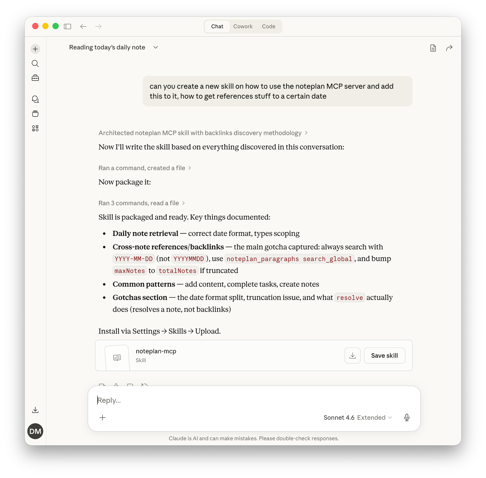

总结
这篇文章的核心主张：MCP 负责连接，Skill 负责说明书；不要用 skill 替代连接层。
- MCP 是 API abstraction：模型只需要知道“做什么”，不需要知道“怎么做”。
- MCP 的优势：零安装远程使用、无缝更新、OAuth 认证、跨设备可移植、天然沙箱、工具发现。
- Skills 的问题：依赖本地 CLI、密钥管理混乱、生态碎片化、上下文膨胀。
- 纯知识 skill 很好；需要执行能力的 skill 往往只是“CLI 的包装”。
- 最佳组合：MCP 提供连接和执行，Skill 提供使用说明和踩坑经验。
原文逐段对照翻译
翻译说明：以下按原文顺序逐段翻译，保留作者的全部论证和例子；中文以自然、准确为目标。

核心主张
TL;DR: The AI space is pushing hard for "Skills" as the new standard for giving LLMs capabilities, but I'm not a fan. Skills are great for pure knowledge and teaching an LLM how to use an existing tool. But for giving an LLM actual access to services, the Model Context Protocol (MCP) is the far superior, more pragmatic architectural choice. We should be building connectors, not just more CLIs.
太长不看版：AI 圈正在把 “Skills” 推成给 LLM 能力的新标准，但我不买账。Skills 很适合纯知识和教模型使用已有工具；但要真正让模型访问服务，MCP 是更优越、更务实的架构选择。我们应该造连接器，而不是造更多 CLI。
Maybe it's an artifact of spending too much time on X, but lately, the narrative that "MCP is dead" and "Skills are the new standard" has been hammered into my brain. Everywhere I look, someone is celebrating the death of the Model Context Protocol in favor of dropping a SKILL.md into their repository.
可能是在 X 上泡太久了，最近“MCP 已死、Skills 才是新标准”的说法一直往我脑子里灌。放眼望去，到处都有人在庆祝 MCP 的死亡，仿佛只要往仓库里丢一个 SKILL.md 就赢了。
I am a very heavy AI user. I use Claude Code, Codex, and Gemini for coding. I rely on ChatGPT, Claude, and Perplexity almost every day to manage everything from Notion notes to my DEVONthink databases, and even my emails. I just don't like Skills. I hope MCP sticks around. I really don't want a future where every single service integration requires a dedicated CLI and a markdown manual.
我是重度 AI 用户：写代码用 Claude Code、Codex、Gemini；日常用 ChatGPT、Claude、Perplexity 管理 Notion、DEVONthink 数据库，甚至邮件。我只是不喜欢 Skills。我希望 MCP 留下来——我真的不想要一个“每个服务集成都得配一个专用 CLI 和一本 Markdown 手册”的未来。
MCP 好在哪

The core philosophy of MCP is simple: it's an API abstraction. The LLM doesn't need to understand the how; it just needs to know the what. If the LLM wants to interact with DEVONthink, it calls devonthink.do_x(), and the MCP server handles the rest.
MCP 的核心哲学很简单：它是 API 抽象。模型不需要理解“怎么做”，只需要知道“做什么”。比如模型想操作 DEVONthink，就调用 `devonthink.do_x()`，剩下的由 MCP server 处理。
Zero-install remote usage: for remote MCP servers, you don't need to install anything locally. You just point your client to the MCP server URL, and it works. Seamless updates: when a remote MCP server is updated with new tools, every client instantly gets the latest version.
零安装远程使用：远程 MCP server 不需要本地安装，客户端指向 URL 就能用。无缝更新：server 新增工具后，所有客户端立即获得最新版本，不需要推包、升级或重装。
Saner auth: authentication is handled gracefully, often with OAuth. Once the client finishes the handshake, it can perform actions against the MCP. You aren't forcing the user to manage raw tokens and secrets in plain text.
更合理的认证：通常用 OAuth，握手完成后客户端就能操作，不需要逼用户明文管理 token 和密钥。
True portability: my remote MCP servers work from anywhere: my Mac, my phone, the web. I can manage my Notion via my LLM of choice from wherever a client is available. Sandboxing: remote MCPs are naturally sandboxed. They expose a controlled interface rather than giving the LLM raw execution power in your local environment.
真正可移植：远程 MCP 在 Mac、手机、网页上都能用，我可以在任何有客户端的地方用任意 LLM 管理 Notion。天然沙箱：远程 MCP 暴露的是受控接口，而不是把本地执行权直接交给模型。
Smart discovery: modern apps have tool search built-in. They only look for and load tools when they are actually needed, saving precious context window. Frictionless auto-updates: even for local setups, an MCP installed via npx -y or uv can auto-update on every launch.
智能发现：现代客户端内置工具搜索，只在需要时加载工具，节省上下文。自动更新：即使是本地 MCP，用 `npx -y` 或 `uv` 安装后也能每次启动自动更新。
Skills 的摩擦

Not all Skills are the same. A pure knowledge skill—one that teaches the LLM how to format a commit message, write tests a certain way, or use your internal jargon—actually works well. The problems start when a Skill requires a CLI to actually do something.
并不是所有 Skills 都一样。纯知识型 skill——教模型怎么写 commit message、怎么写测试、怎么理解内部行话——确实很好用。问题出在“需要 CLI 才能真正做事”的 skill 上。
My biggest gripe with Skills is the assumption that every environment can, or should, run arbitrary CLIs. Most "capability" skills require you to install a dedicated CLI. But what if you aren't in a local terminal? ChatGPT can't run CLIs. Neither can Perplexity or the standard web version of Claude.
我最不满的一点，是 Skills 默认“每个环境都能、也应该跑任意 CLI”。大多数“能力型” skill 都要求安装专用 CLI。但如果你不在本地终端呢？ChatGPT 不能跑 CLI，Perplexity 不能，网页版 Claude 也不能。
The Deployment Mess: CLIs need to be published, managed, and installed through binaries, NPM, uv, etc. The Secret Management Nightmare: where do you put the API tokens required to authenticate? Some ephemeral environments wipe themselves, meaning your CLI works today but forgets your secrets tomorrow.
部署麻烦：CLI 要发布、管理，通过二进制、NPM、uv 等安装。密钥管理是噩梦：API token 放哪？有些临时环境会自动清空，今天能用，明天密钥就没了。
Fragmented Ecosystems: skill management is currently the wild west. When a skill updates, you have to reinstall it. Some tools support a "skills marketplace," others don't. Some can install from GitHub, others can't.
生态碎片化：skill 管理还是西部荒野。更新要重装；有的工具有 marketplace，有的没有；有的能从 GitHub 安装，有的不能。
Context Bloat: using a skill often requires loading the entire SKILL.md into the LLM's context window, rather than just exposing the single tool signature it needs. It's like forcing someone to read the entire car's owner's manual when all they want to do is call car.turn_on().
上下文膨胀：用一个 skill 往往要把整个 `SKILL.md` 加载进上下文，而不是只暴露一个工具签名。就像只想调用 `car.turn_on()`，却被迫读完整本车主手册。
If a Skill's instructions start with "install this CLI first," you've just added an unnecessary abstraction layer and extra steps. Why not just use a remote MCP instead?
如果 skill 的第一句话是“先安装这个 CLI”，那你就加了一层不必要的抽象和额外步骤。为什么不直接用远程 MCP？
什么时候用 MCP，什么时候用 Skill

MCP should be the standard for giving an LLM an interface to connect to something: a website, a service, an application. The service or application itself should dictate and own the interface it exposes.
MCP 应该成为“让模型连接外部东西”的标准：网站、服务、应用。接口应该由服务方自己定义和维护。
Take Google Calendar. A gcal CLI is fine. The problem is a Skill that tells the LLM to install it, manage auth tokens, and shell out to it. An OAuth-backed remote MCP owned by Google handles auth at the protocol level, and works from any client without any setup.
以 Google Calendar 为例，`gcal` CLI 本身没问题；问题是让 skill 教模型安装它、管理 token、再 shell 调用。Google 自己提供的 OAuth 远程 MCP，在协议层处理认证，任何客户端零配置可用。
Skills should be "pure." They should focus on knowledge and context: teaching existing tools, standardizing workflows, teaching format handling, and secret management patterns. Having a skill that tells Claude "Use fnox for this repo, here is how to use it" just makes sense.
Skills 应该保持“纯”：专注知识和上下文。教模型使用已有工具、标准化工作流、教格式处理、教密钥管理方式。比如告诉 Claude “这个 repo 用 fnox，这么用”，就很合理。
Maybe the terminology is the problem. Skills should just be called LLM_MANUAL.md, and MCPs should be called Connectors. Both have their place. MCP is the interface to connect to an external thing. A Skill is the manual for how to interact with a thing.
也许问题在术语：Skills 应该叫 `LLM_MANUAL.md`，MCP 应该叫 Connectors。两者都有位置：MCP 是连接外部东西的接口，Skill 是如何与这个东西交互的说明书。
最佳组合：给连接器写说明书

A skill that explains how to use an MCP server actually makes a lot of sense. Not to replace the MCP, but to give the LLM context before it starts calling tools: what the service does, how the tools relate to each other, and when to use which one. That's the combination I'd want.
一个解释“怎么用 MCP server”的 skill 非常合理。它不是替代 MCP，而是在调用工具前给模型上下文：这个服务做什么、工具之间什么关系、什么时候用哪个。这才是我想要的组合。
When I'm working with an MCP server, I inevitably discover gotchas: a date format that needs to be YYYY-MM-DD instead of YYYYMMDD, a search function that truncates results unless you bump a parameter, a tool name that doesn't do what you'd expect. Rather than rediscovering these every session, I ask Claude to wrap everything we learned into a Skill.
用 MCP server 时，总会踩到坑：日期格式必须是 `YYYY-MM-DD` 而不是 `YYYYMMDD`；搜索函数默认截断结果，除非调大参数；某个工具名字和实际行为不符。与其每次重新发现，不如让 Claude 把学到的内容写成一个 skill。
The result is a Skill that acts as a cheat sheet for the MCP, not a replacement for it. The MCP still handles the actual connection and tool execution. The Skill just makes sure the LLM doesn't waste tokens stumbling through the same pitfalls.
结果是一个 MCP 的 cheat sheet，而不是替代品。MCP 仍负责连接和执行，skill 只负责让模型少走弯路、少烧 token。
学习者视角
关键收获
- 连接层和执行层要分开。 MCP 负责“能连上、能调用”，Skill 负责“知道怎么用、什么时候用”。
- 不要把所有能力都做成 CLI。 CLI 假设了一个完整的本地环境，而很多客户端没有。
- 认证是架构问题，不是配置问题。 OAuth、token 生命周期、远程沙箱，决定了方案能不能规模化。
- 上下文成本是 skill 的隐性成本。 整个
SKILL.md加载 vs 一个工具签名，差别很大。 - 两者组合最优。 纯知识用 skill，服务访问用 MCP，再用 skill 写 MCP 的使用说明。
放回课程里看
这篇是 Week 4 的架构争论。它和 Enterprise MCP 形成完整视角：一个讲企业怎么管 MCP，一个讲为什么 MCP 应该是连接层。
一个反直觉点
“Skills 是新标准”听起来很激进，但作者指出：很多所谓 skill，只是把 CLI 包装了一层，反而增加了部署、密钥和上下文成本。
拓展
思考题
- 你现在的 agent 工具里，哪些其实是“CLI + 说明书”的 skill？能不能改成 MCP？
- 如果一个服务没有官方 MCP，你会自己包一个，还是写一个 skill 教模型用 API？
- Skill 加载整个
SKILL.md的成本，什么时候值得？什么时候应该拆成更小的工具？ - “服务应该拥有自己的接口”这个观点，对小团队现实吗？
练习
画一张你项目的“连接层 / 知识层”分工图：
- 左边列所有外部服务；
- 右边列所有流程知识；
- 判断每个服务应该用 MCP、CLI 还是 skill；
- 为其中一个 MCP 写一份“使用说明书” skill。